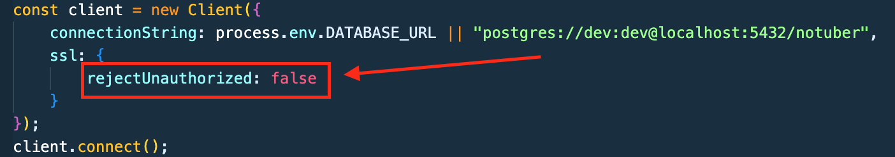
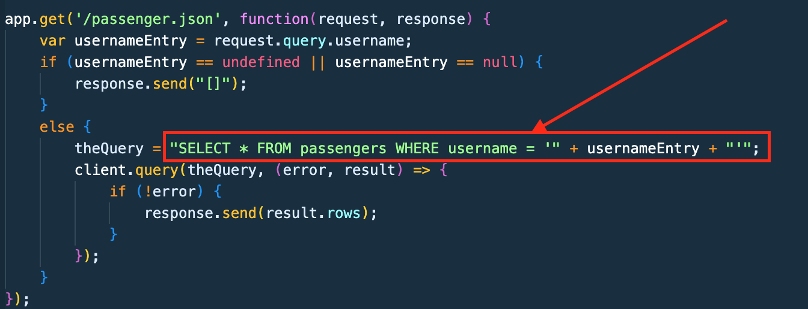
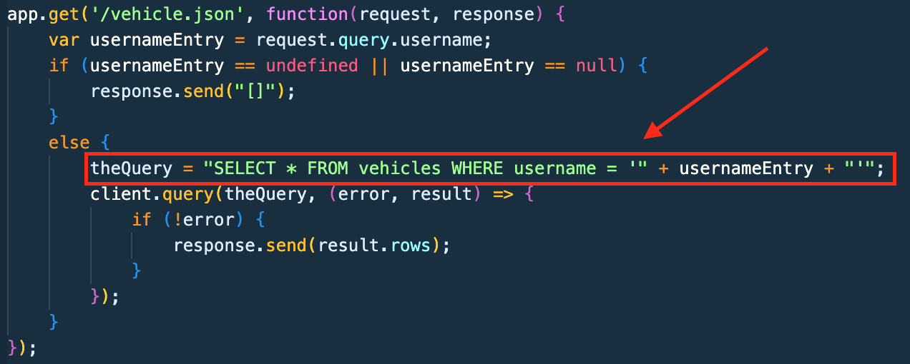
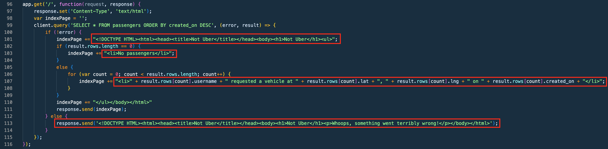

Lab 13: Security and Privacy Assessment of Ride-Hailing Service
Introduction
...
Methodology
...
Abstract of Findings
...
Issues Found
Issue #1: MITM Vulnerability - SSL
- Location: Line 11 of JS source code
- Severity: High. With rejectUnauthorized set to false, the code will continue to run even if the server's identity is not verified. This vulnerability could result in a MITM attack.
- Description: I found this issue by looking at the source code. It seemed strange to me that the ssl would not be required, so I did my own research on what this code snippet meant.
- Proof of Vulnerability:

- Resolution: Instead of setting 'rejectUnauthorized' to false, set 'rejectUnauthorized' to true. This will mean the code will throw an error if a secure connection is not established.
Issue #2: SQL Injection Vulnerabilities
- Location: Line 72 and Line 87 of JS source code
- Severity: High
- Description: In both the app.get('/passenger.json') and the app.get('/vehicle.json'), the SQL statements allow for user input that can be manipulated to dump all data.
- Proof of Vulnerabilities (2):


- Resolution: Use prepared statements instead of string concatenation within the queries.
Issue #3: XSS Vulnerabilities
- Location: Lines 101, 103, 107, 113
- Severity: High
- Description: In app.get('/') there are numerous instances of vulnerable code to XSS attacks.
- Proof of Vulnerabilities (multiple):

- Resolution: Validate data/user input. Additionally, encode all output from the application to browsers.
Conclusion
...